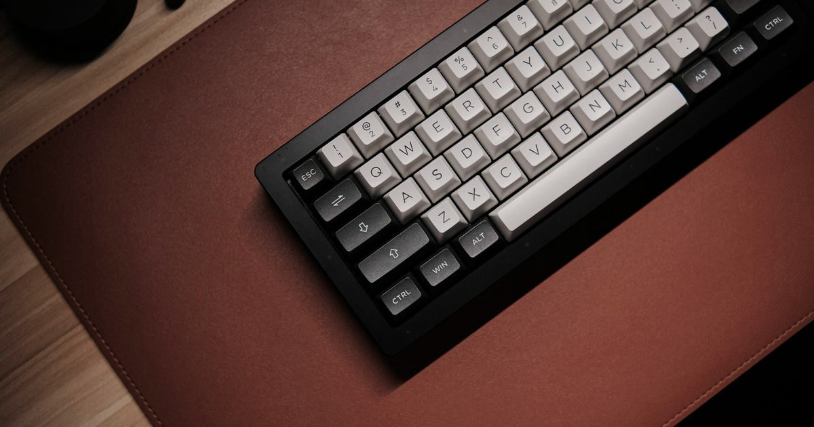
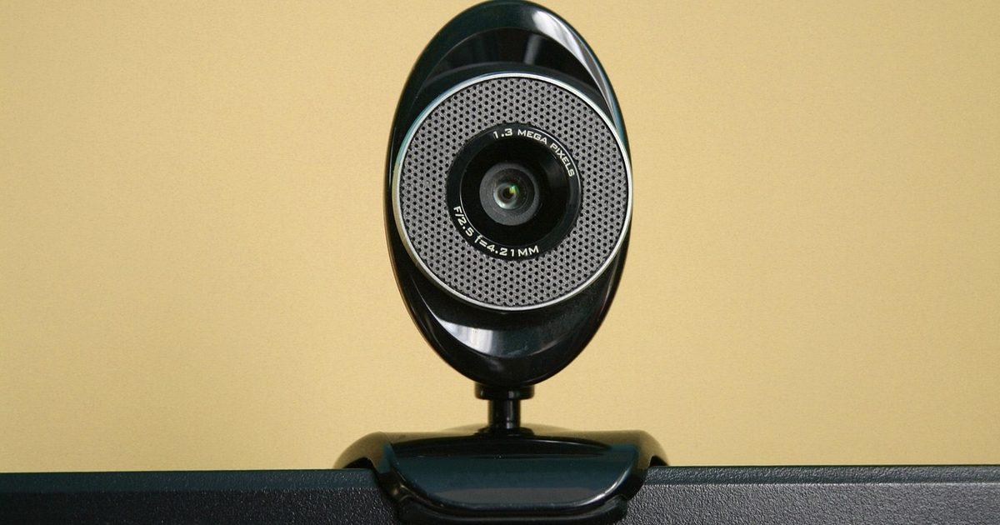
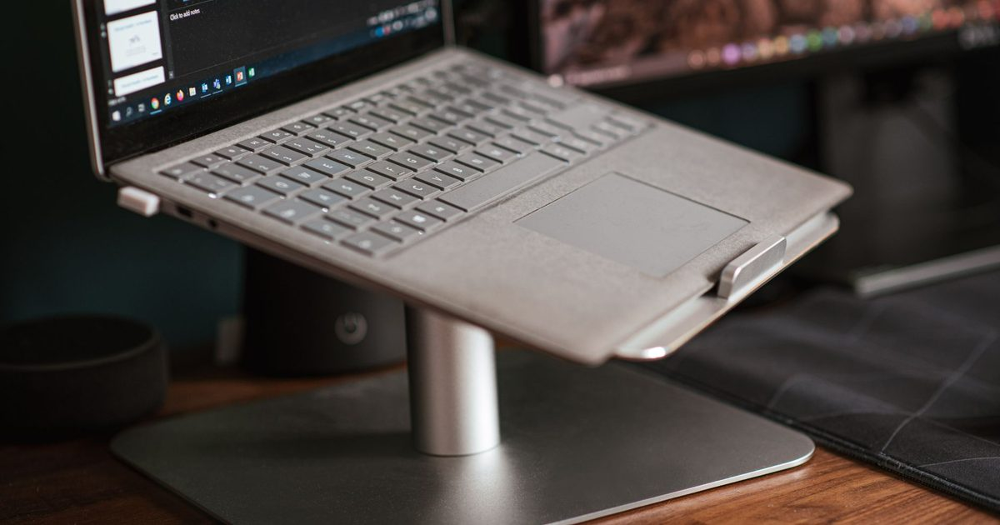
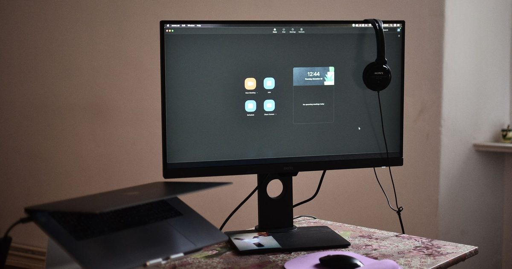
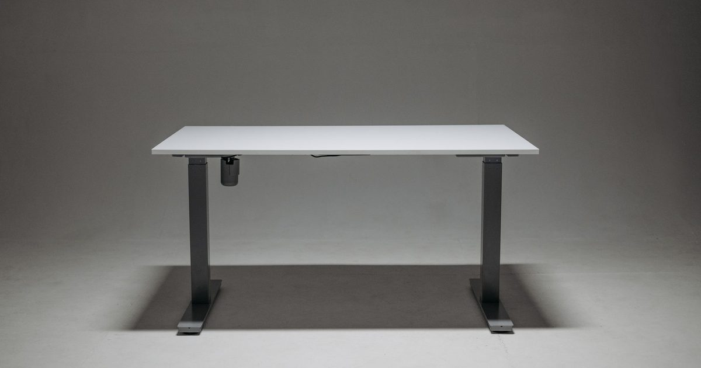
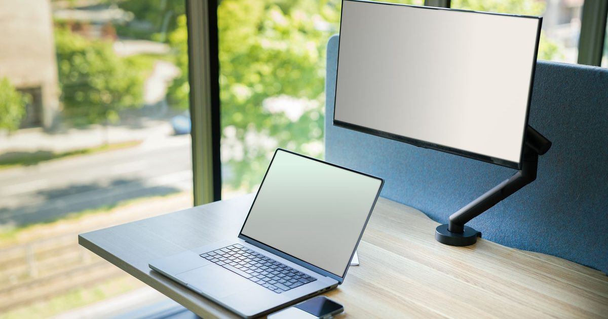
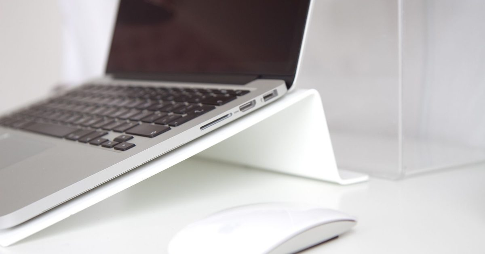
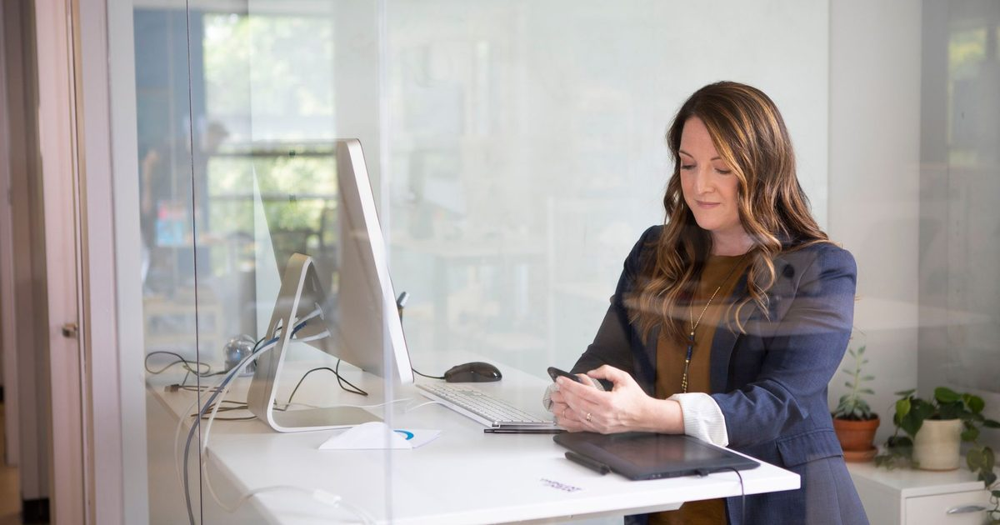
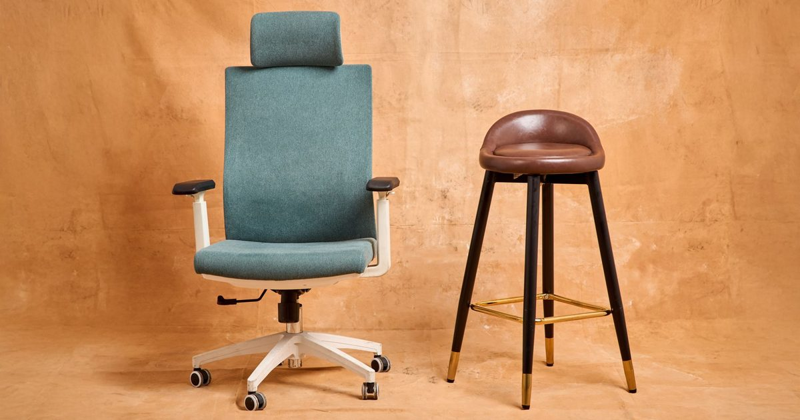

Desk Accessories
Best Desk Mat and Cable Management UK 2026Read guide →

Desk Accessories
Best Monitor Light Bar UK 2026Read guide →

Desk Accessories
Best Monitor Arm UK 2026Read guide →

Audio & Calls
Best Webcam For Work Calls UK 2026Read guide →

Desk Accessories
Best Laptop Stand UK 2026Read guide →

Setup Guides
How High Should Your Monitor BeRead guide →
Audio & Calls
Best Speakerphone For Work Calls UK 2026Read guide →

Setup Guides
What Height Should A Standing Desk BeRead guide →

Setup Guides
Will A Monitor Arm Fit Your MonitorRead guide →

Setup Guides
Does A Laptop Stand Help With CoolingRead guide →

Standing Desks
Best Standing Desk For A Small Home Office UK 2026Read guide →

Office Chairs
Best Office Chair Under 300 UK 2026Read guide →